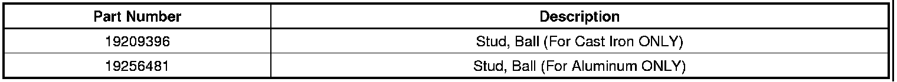

Steering/Suspension - Ball Joint Availability
INFORMATIONBulletin No.: 07-03-08-009B
Date: December 07, 2009
Subject: Two New Service Ball Joint Kits Available for Aluminum and Cast Iron Lower Control Arms - Kits NOT Interchangeable
Models:
2007-2010 Cadillac Escalade, Escalade EXT
2007-2010 Chevrolet Avalanche, Silverado, Tahoe (1500 Series)
2007-2010 GMC Sierra, Yukon (1500 Series)
Supercede:
This bulletin is being revised to add the Silverado and Sierra models and update service information. Please discard Corporate Bulletin Number 07-03-08-009A (Section 03 - Suspension).
For the 2007-2010 model years, 1500 series light duty utility vehicles were built concurrently with either aluminum or cast iron front lower control arms. Each type of lower control arm requires a unique ball stud service part.
Important
Complete lower control arms should not be replaced for lower ball joint failures.
All lower ball joints are now serviceable on aluminum and cast iron control arms for 1500 series pickup and utility models. The kit for cast iron control arms lower ball joints is P/N 19209396 and the aluminum lower ball joint kit is P/N 19256481. These kits are NOT interchangeable. There are new special tools that are released to service the lower ball joints on-vehicle (J-41805 and CH-49240). For the new lower ball joint service procedures, refer to Lower Control Arm Ball Joint Replacement in SI.

Parts Information

Disclaimer